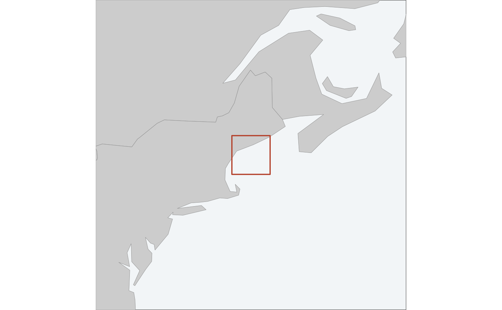

A small wider map with the figure's extent marked on it, for saying where in
the world this is. Drawn by map_surface() and friends when inset = TRUE;
call it directly to build one and place it yourself.
Usage
locator_inset(
extent,
crs = NULL,
zoom = 8,
max_zoom = 64,
coastline = TRUE,
mark_colour = "#B3402A"
)Arguments
- extent
The extent to mark, as a
bbox, ansfobject, or amap_data.- crs
The CRS to draw the inset in. Defaults to an equal-area projection centred on the extent – not the map's own CRS. See Details.
- zoom
How many times wider than
extentto start at. The inset widens past this if it has to – see Details.- max_zoom
How far it is allowed to widen before giving up. Past this, the inset is a map of an ocean and says nothing.
- coastline
Where land comes from, as in
coastline().- mark_colour
Colour of the extent marker.
Which projection
An equal-area projection centred on the extent, not the CRS the map is drawn in. An inset is much wider than its map, and a projection that is honest over 300 km need not be over 2,400: drawing an inset eight times the Gulf of Maine in UTM 19N renders the coastline as vertical bands, because most of that extent is many zones from the central meridian. Centring on the extent has no zone to leave.
How wide
zoom is a starting point, not a setting. An inset is only doing its job
once there is something recognisable in it, so the extent is widened –
doubling each time, up to max_zoom – until land appears. Eight times the
Gulf of Maine is most of the northeast seaboard and orients anyone; eight
times a 32 km grid at the mouth of the Bay of Fundy is open water and orients
nobody.
If no land is found by max_zoom, this returns NULL and the map is drawn
without an inset. An empty inset is worse than no inset: it looks like a
rendering failure, and it still takes up the corner.
The marker
The extent is drawn as a rectangle. On a wide inset that rectangle can be smaller than the line used to draw it, so below a visible size it is replaced by a fixed-size marker centred on the same place. That marker is deliberately not to scale, and it is why the inset never carries a scale bar – it says where, and the main panel says how big.
See also
map_surface(), which draws one on request.
Examples
locator_inset(example_grid())
